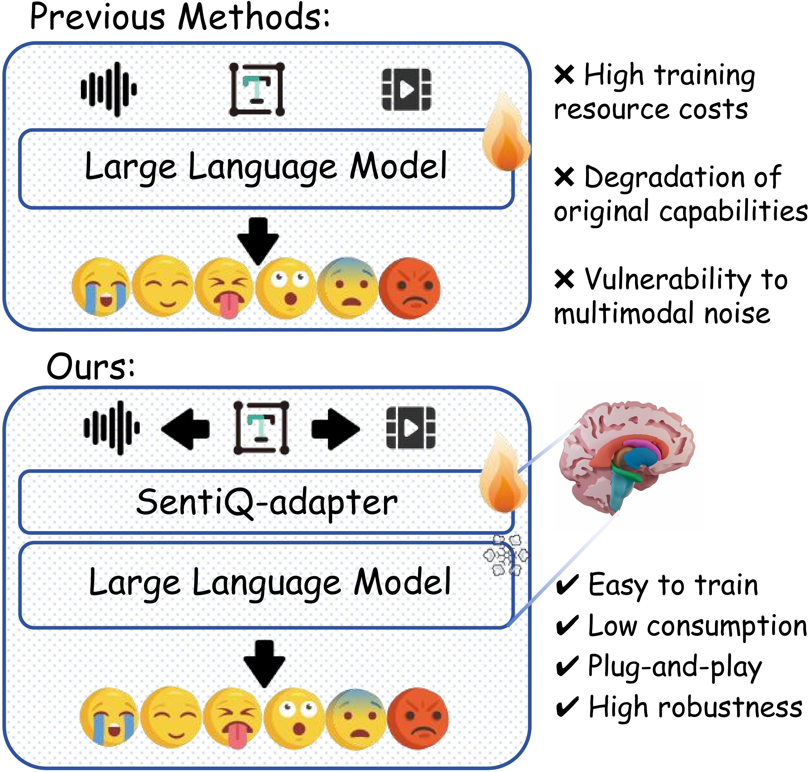
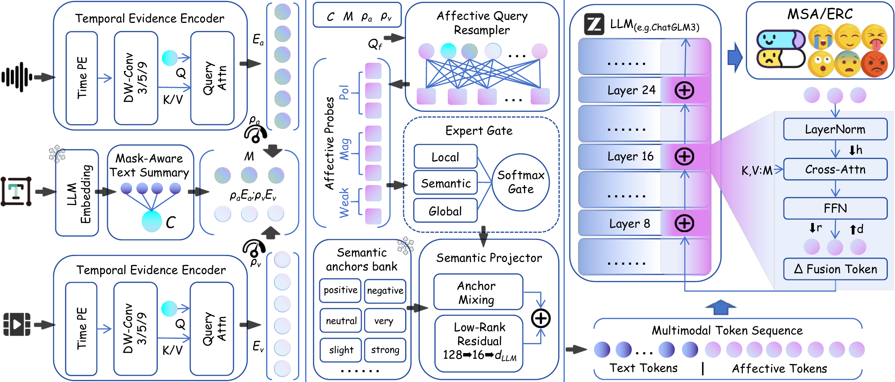
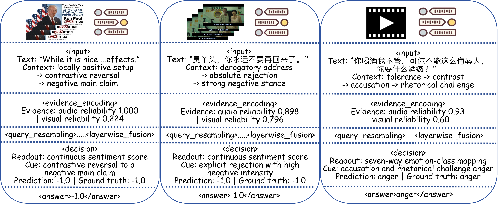

English / MSA
87.31% Acc-2
MOSEI
- F1
- 87.13
- MAE
- 0.500
- Corr
- 0.793
Bionic Affective Computing
THA treats multimodal affect as a communication problem: select task-relevant sensory evidence, regulate it by reliability, and repeatedly relay a compact affective state through an otherwise frozen language model.
Research motivation
Bionic Affective Computing translates the functional organization of biological systems into explicit communication and modulation principles for affective LLMs. THA instantiates this view as a context-sensitive, reliability-aware relay around a frozen semantic backbone.

Method
THA selects temporal evidence, compresses it into a fixed token budget, reconciles complementary expert views, anchors the state in the LLM embedding geometry, and refreshes only that state at selected Transformer depths.

Results
Headline test performance below uses the ChatGLM3-6B backbone. Higher is better for accuracy, F1, and correlation; lower is better for MAE.
| Backbone | MOSEI Acc-2 / MAE | SIMS-V2 Acc-2 / MAE | CHERMA Acc / WF1 |
|---|---|---|---|
| Qwen-1.8B | 85.15 / 0.517 | 79.30 / 0.322 | 73.19 / 73.56 |
| LLaMA2-7B | 85.94 / 0.535 | 79.40 / 0.329 | 73.19 / 73.01 |
| ChatGLM3-6B | 87.31 / 0.500 | 83.75 / 0.274 | 74.79 / 74.77 |
Parameter efficiency
The core size depends on the input dimensions and the backbone embedding width. See all metrics and parameter counts.
Behavioral evidence
Qualitative traces expose the selected modalities, learned reliability, shared routing path, and final prediction for one example from each benchmark.

Reference implementation
The repository loads Qwen, ChatGLM3, or LLaMA2 from their original Hugging Face implementations. Runtime hooks inject THA at configured layers; checkpoints contain only THA state and run metadata.
# Minimal environment
conda env create -f environment.yml
conda activate tha
pip install -e .
# Validate data without loading an LLM
tha inspect-data \
--backbone chatglm3 \
--dataset mosei \
--data-root ./data
# Train THA; the base model remains frozen
tha train \
--backbone chatglm3 \
--dataset mosei \
--data-root ./data \
--output-dir outputs/mosei_chatglm3